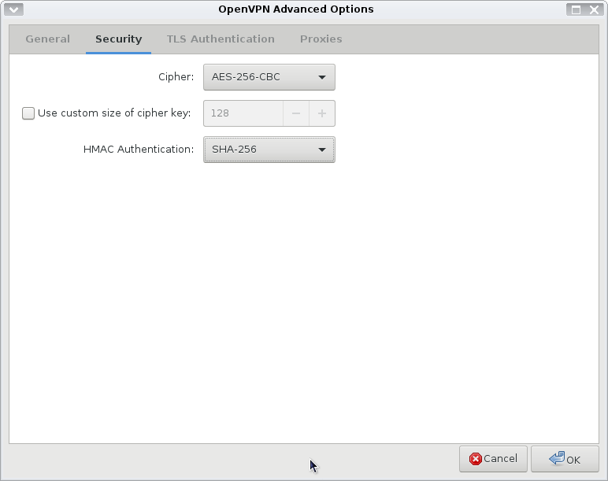

The PrivateInternetAccess (PIA) installation script is working partially. TV channels do not work with this. I prefer to install PIA manually to control the protocol (TCP instead of UDP), encryption cipher, authentication, certificate, port, etc. You need to install first the openvpn and NetworkManager software (see also NetworkManager-wifi, bluetooth, ssh, and more).
dnf install openvpn dnf install NetworkManager-openvpn NetworkManager-openvpn-gnome dnf install network-manager-applet
Run from the console nm-applet to activate the NetworkManager applet in XFCE bar. This should be remembered after a restart. Now, reboot and make sure the applet shows up. Right-click to edit the connection.
Let's download the prerequisites files.
cd /opt mkdir pia-openvpn-ip-tcp && cd pia-openvpn-ip-tcp wget http://www.privateinternetaccess.com/openvpn/ca.crt wget http://www.privateinternetaccess.com/openvpn/ca.rsa.2048.crt wget http://www.privateinternetaccess.com/openvpn/ca.rsa.4096.crt wget https://www.privateinternetaccess.com/openvpn/openvpn-ip-tcp.zip unzip openvpn-ip-tcp.zip
Now let's add one VPN connection.
For the VPN details see table(1) port 501 with protocol TCP, encryption AES-256-CBC, auth SHA256 with ca.rsa.4096.crt To get the PIA server ip for Romania look inside /opt/pia-openvpn-ip-tcp/Romania.ovpn
On the Proxy tab check "For browser only". We use directly the IP address so IPv4 DNS entries are not needed. Other dialog settings remain on the default. Click Advanced -> General and set data according to table (1), port 501
Here is the Advanced Security page.
The "TLS Authentication" and "Proxies" tabs remains unchanged. Save the VPN connection. To see the its details, as root:
cd /etc/NetworkManager/system-connections cat PIA-Romania [connection] id=PIA-Romania uuid=a29bbbb3-495b-49d1-b617-cd6d28605315 type=vpn autoconnect=false permissions= [vpn] auth=SHA256 ca=/opt/pia-openvpn-ip-tcp/ca.rsa.4096.crt cipher=AES-256-CBC comp-lzo=yes connection-type=password dev-type=tun password-flags=0 port=501 proto-tcp=yes remote=185.210.218.102 username=p4684088 service-type=org.freedesktop.NetworkManager.openvpn [ipv4] dns-search= method=auto [ipv6] addr-gen-mode=stable-privacy dns-search= ip6-privacy=0 method=auto [proxy] browser-only=true
To connect to "PIA-Romania" left click NM applet -> VPN Connections-> PIA Romania and check it.